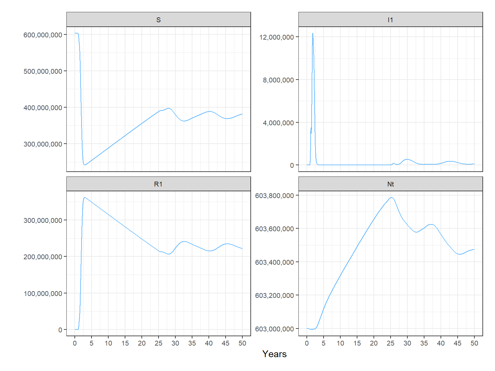
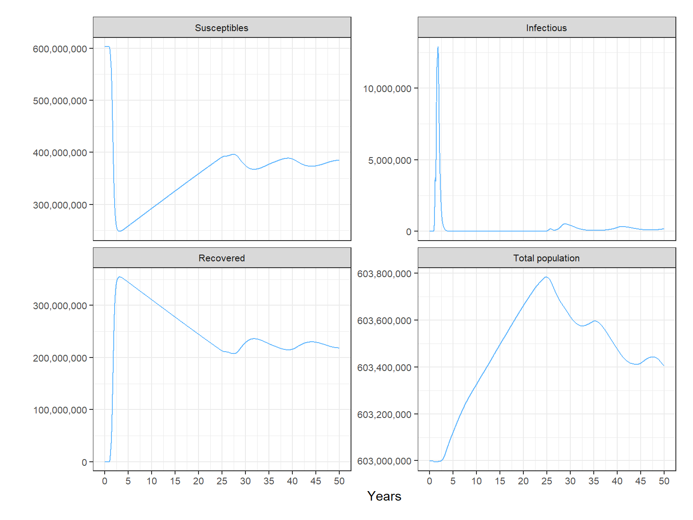
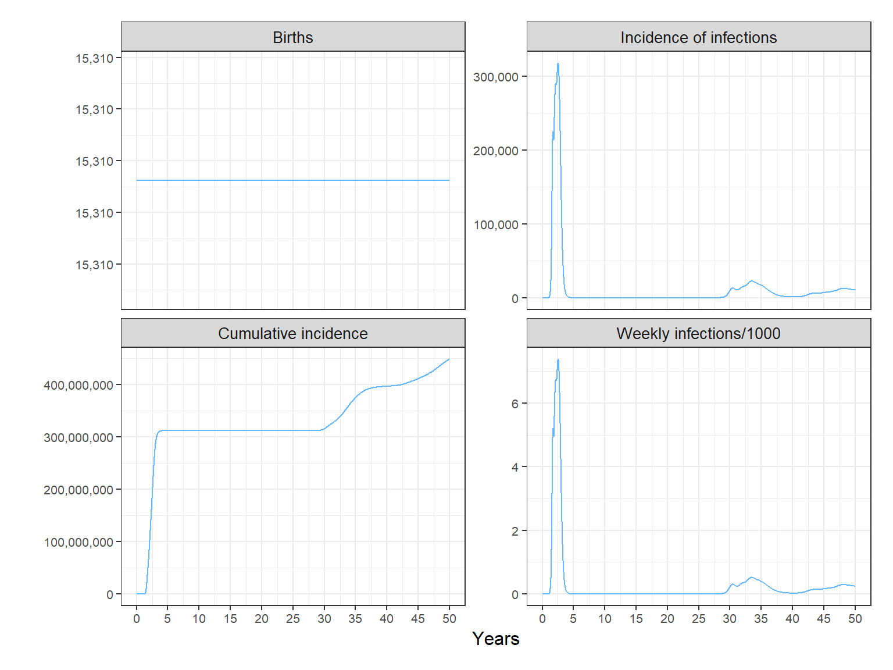

vignettes/deterministic_base_model.Rmd
deterministic_base_model.Rmdlibrary(ZikaModel)To run the deterministic version of the model, without seasonality and interventions, you can do the following:
# create a vector of human age groups
age_init <- c(1, 9, 10, 10, 10, 10, 10, 10, 10, 10, 10)
# create a vector of human mortality rates
deathrt <- c(1e-10,
1e-10,
1e-10,
0.00277068683332695,
0.0210680857689784,
0.026724997685722,
0.0525354529367476,
0.0668013582441452,
0.119271483740379,
0.279105747097929,
0.390197266957464)
# provide the length of time (in days) that you want to run the model for
time_frame <- 364 * 100
# run the model
model_outputs <- run_model(agec = age_init,
death = deathrt,
nn_links,
time = time_frame)We can calculate the proportions of the total human population in each compartment and few other useful demographics using the post_processing function
diagnostics <- post_processing(model_outputs)Now we plot them
plot_compartments(diagnostics$compartments)
plot_demographics(diagnostics$demographics)
#> [[1]]
#>
#> [[2]]